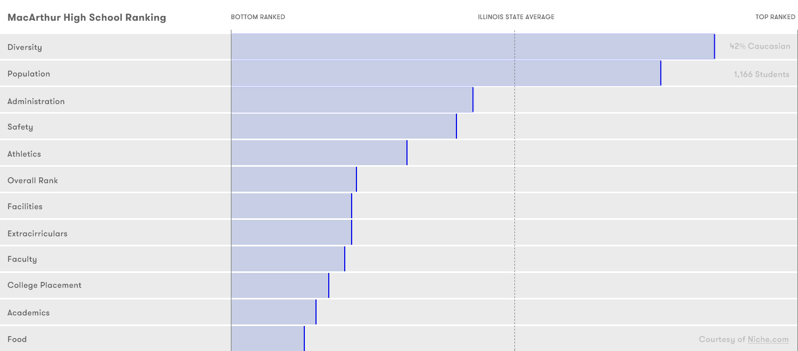
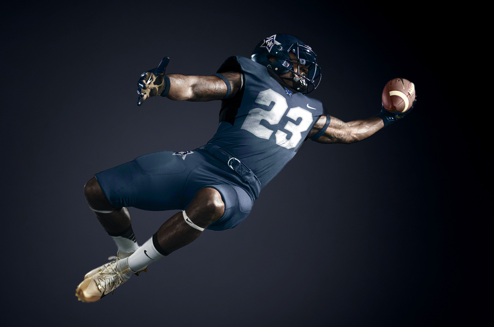
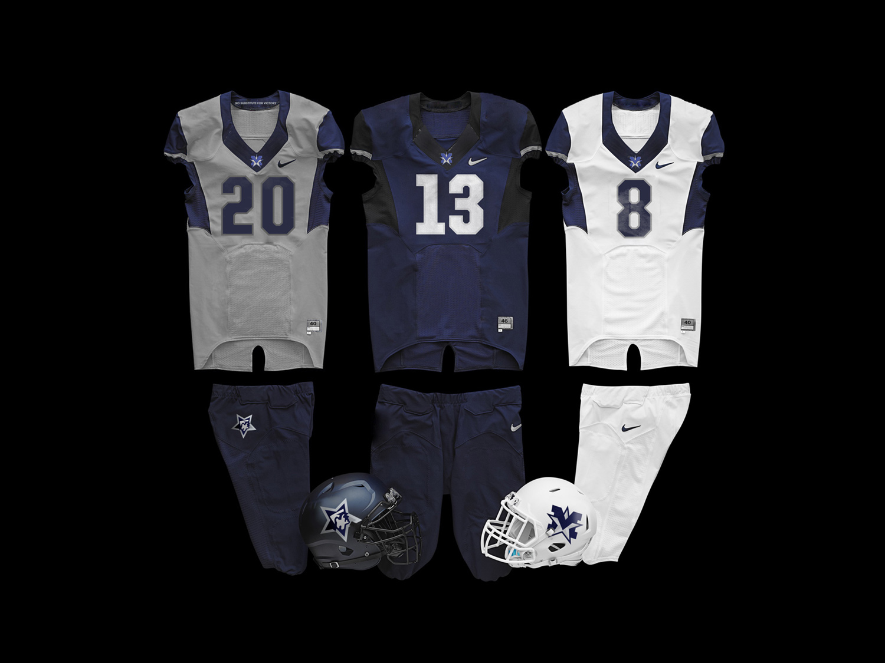
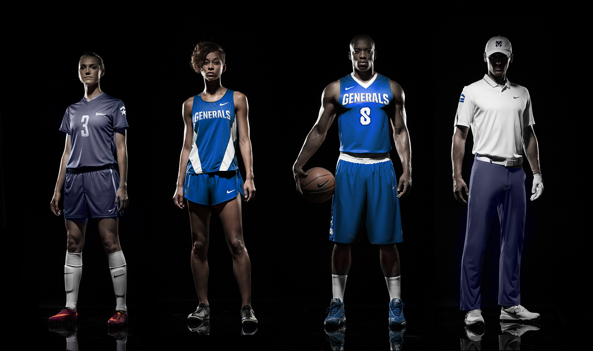
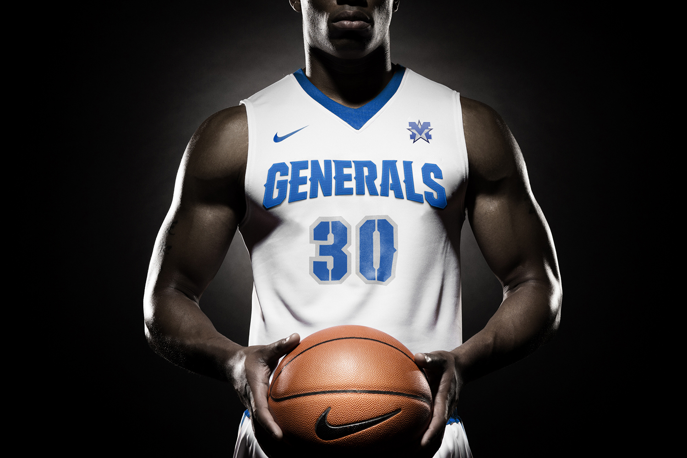
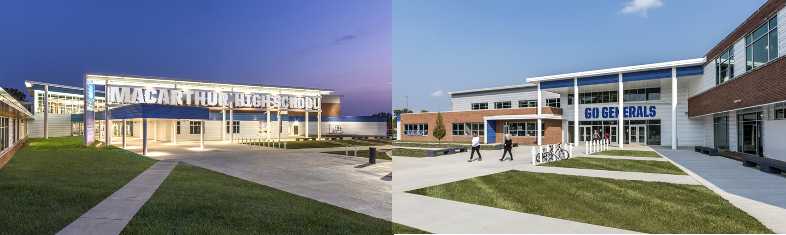

<!DOCTYPE html>
<html lang="en">
<head>
    <title>GENERAL IMPROVEMENTS : MACARTHUR GENERALS</title>
    <meta name="viewport" content="width=device-width, initial-scale=1.0" />
	<meta name="keywords" content="photography,branding,design,art direction,typography">
    <meta name="author" content="Toby Grubb">
    <meta charset="UTF-8" />
    <meta http-equiv="Content-Type" content="text/html; charset=utf-8" />
	<link rel="icon" type="image/ico" href="images/twicestrong.ico" />
    <link href="style.css" rel="stylesheet" />
    <link href="css/font-awesome.min.css" rel="stylesheet" />
<link href='https://fonts.googleapis.com/css?family=EB+Garamond' rel='stylesheet' type='text/css'>
    <link href='http://fonts.googleapis.com/css?family=Oswald:300,400,700' rel="stylesheet" type="text/css">
    <link href='https://fonts.googleapis.com/css?family=Playfair+Display' rel='stylesheet' type='text/css'>
    <script type="text/javascript" src="//use.typekit.net/pps5mlb.js"></script>
    <script type="text/javascript">try{Typekit.load();}catch(e){}</script>
</head>


<body>


	<!-- Content -->
    <div id="content">
	<div id="content-ajax">


            <div id="hero">

            <!-- Full Screen Slider -->
        	<div class="tg-slider">
                <ul class="slides">
                    <li class="dark-bg" style="background-image:url(images/projects/MacArthur_Header.jpg); background-color:#0c2359">
                        <div class="overlay" style="background-color:rgba(0,0,0,0)"></div>
                    </li>


                </ul>
            </div></div>
        	<!--/Full Screen Slider -->


        <!-- Main -->
        <div id="main">


            <!-- Container -->
           	<div class="container">


            <div class="one_half">
            <p> MacArthur High School, a public charter school in Decatur, Illinois was renovated in 2015. With a generous 1% tax increase in 2010, the Decatur Public School system was able to outfit its two public high schools with state-of-the-art learning facilities and an expanded footprint to accommodate displaced students from Stephen Decatur HS.</p></div>

			<div class="one_half last">
			<p>While MacArthur High School is above the state average in size and diversity, it has fallen far behind the state average in athletics, academics, extracurriculars and college placement. By leveraging the excitement surrounding the new facilities, I believe that <b>this can change.</b>
</p></div>

            

            <hr>

            <div class="one_half">
				<p>I believe extracurriculars, academics and athletics can be promoted more effectively by embracing the rich military history of it's namesake, General Douglass MacArthur. Students would earn chevrons for each year they letter in a varsity sport, a star for captainship and a bar for each year they make honor and high-honor roll. Students apply theses iron-ons to their athletic jerseys and/or letterman jackets to reveal their diverse talents on-and-off the field.</p></div>

			<div class="one_half last"><p>


							This will encourage engagement by making an academic student in the jazz band as decorated as a three-year varsity starter, and the volleyball captain and four-year letterman who was able to uphold a 3.5 GPA even more prestigious. Students want something to believe in. They need something authentic to fight for. The result is a reward system that students can get behind. Drugs, gangs, social bullying and apathy are not negative side effects of youth culture - they are ever-present alternatives. By providing students with something equally engaging, you provide them with better choices.
			</p></div>


            <hr>


            </div>
            <!--/Container -->

            
            
            

            <div class="container">
            <div class="text-align-center">
				<hr><p>The proposed school identity features a primary mark, known as the "MacStar". It utilizes an enhanced color palette and has a light and dark version. The secondary mark is visage of General MacArthur himself with the iconic corncob pipe removed. Finally, each sports team will receive a custom mark for boosters merchandise and supporting materials (shown far below).</p><hr>
            </div>
            </div>


            
            
            


            <div class="container">
            <div class="text-align-center">
				<hr><h1>"I suppose, in a way, this has become part of my soul. It is a symbol of my life. Whatever I have done that really matters, I've done wearing it. When the time comes, it will be in this that I journey forth.”</h1><p><br>- General Douglass MacArthur</p><hr>
            </div>
            </div>


            


            <div class="container">

            <hr>

            <div class="one_half">
                <p>The vision is to provide MacArthur Athletics Department and the Administration with a new brand and identity system that sets the visual direction for Generals, by an alumnus, for years to come. MacArthur's brand evolution program utilizes consistent marks across all athletics programs, honors the Generals spirit through tradition, pride and integrity. As MacArthur enters a new chapter, developing a modern and consistent athletic identity that encompasses the pride of the school is key. </p></div>

	        <div class="one_half last">
				<p>As part of the refined brand identity, all 20 of MacArthur Athletics teams will showcase consistent colors, logos, lettering and numerals. Once the fundraising effort gains speed, Nike will be approached for assistance in sourcing and customizing jerseys for select sports. An algorithm of academic standing and participation will be employed to determine priority.</p>
            </div>


            <hr>


            </div>
            <!--/Container -->

            
            
            


            <div class="container">

            <hr>

            <div class="one_half">
                <p>For me, Decatur MacArthur High School provided a rigorous academic curriculum with strong co-curricular programs in athletics, performing arts, technology and design.  It provided a clear trajectory for me to excel in the design industry, where I've had the pleasure of art directing global brands like Nike, Burton, Specialized and Google. I now own my own studio and see an opportunity to give back with the skills I obtained in the Decatur Public School System.
</p></div>

            <div class="one_half last">
				<p>If you appreciate this effort and you are a student, parent, alumni or fan - please pledge a dollar or ten to show your support. If the fundraiser exceeds $5,000 we'll donate the total towards new jerseys.</p><p>We appreciate your attention and generosity. Go Generals!</p><p>- Toby Grubb, Class of 1999<br><br><a href="" class="tg-button">DONATE VIA GOFUNDME</a></p>
            </div>


            <hr>


            </div>
            <!--/Container -->


        <!-- Scroll To Top -->
        <div class="scrolltotop"><div class="top-arrow"></div></div>
        <!--/Scroll To Top -->


	</div>
	
    </div>
	<!--/Content -->


	<script src="js/jquery.min.js"></script>
    <script src="js/plugins.js"></script>
    <script src="http://maps.google.com/maps/api/js?sensor=false" type="text/javascript"></script>
    <script src="js/scripts.js"></script>

    <script type="text/javascript">
        var _gaq = _gaq || [];
        _gaq.push(['_setAccount', 'code here']);
        _gaq.push(['_trackPageview']);
        (function() {
            var ga = document.createElement('script'); ga.type = 'text/javascript'; ga.async = true;
            ga.src = ('https:' == document.location.protocol ? 'https://ssl' : 'http://www') + '.google-analytics.com/ga.js';
            var s = document.getElementsByTagName('script')[0]; s.parentNode.insertBefore(ga, s);
        })();
    </script>


</body>

</html>
